In this chapter, we recalibrate the predicted values estimated by a Random Forest (classifier and regressor), trained on simulated data (see Chapter 4).
The basic idea is to learn a function \(g(\cdot)\) mapping scores \(s(x)\) into probability estimates \(g(p) := \mathbb{E}[D \mid s(x) = p]\). To avoid overfitting, the training data while learning that mapping, we will rely on data from the calibration set, defined in the function get_samples().
To avoid overfitting, the data will be split into training (used to train the random forest), calibration (to recalibrate the scores) and test sets (to assess the performances on unseen data).
Display the definitions of colors.
library(tidyverse)
── Attaching core tidyverse packages ──────────────────────── tidyverse 2.0.0 ──
✔ dplyr 1.1.4 ✔ readr 2.1.5
✔ forcats 1.0.0 ✔ stringr 1.5.1
✔ ggplot2 3.5.1 ✔ tibble 3.2.1
✔ lubridate 1.9.3 ✔ tidyr 1.3.1
✔ purrr 1.0.2
── Conflicts ────────────────────────────────────────── tidyverse_conflicts() ──
✖ dplyr::filter() masks stats::filter()
✖ dplyr::lag() masks stats::lag()
ℹ Use the conflicted package (<http://conflicted.r-lib.org/>) to force all conflicts to become errors
#' Simulates data#'#' @param n_obs number of desired observations#' @param seed seed to use to generate the datasim_data <-function(n_obs =2000, seed) {set.seed(seed) x1 <-runif(n_obs) x2 <-runif(n_obs) x3 <-runif(n_obs) x4 <-runif(n_obs) epsilon_p <-rnorm(n_obs, mean =0, sd = .5)# True latent score eta <--0.1*x1 +0.05*x2 +0.2*x3 -0.05*x4 + epsilon_p# True probability p <- (1/ (1+exp(-eta)))# Observed event d <-rbinom(n_obs, size =1, prob = p)tibble(# Event Probabilityp = p,# Binary outcome variabled = d,# Variablesx1 = x1,x2 = x2,x3 = x3,x4 = x4 )}
5.2 Splitting the dataset
The process applied in this chapter is divided the following parts: 1. get the trained Random Forest classifier or regressions from Chapter 4 to obtain the predicted scores \(\hat{s}(\boldsymbol x_i)\) (i.e., either \(\hat{p}_{\text{score}}\) or \(\hat{p}_{\text{vote}}\)) 2. recalibrating the obtained scores through different approaches defined in Chapter 2 3. recalculating the different calibration metrics on the recalibrated predicted scores.
Therefore, it is necessary to split the dataset into three parts: 1. a train set: to train the Random Forest classifier, 2. a calibration set: to train the recalibrator, 3. a test set: on which we will compute the calibration metrics.
To split the data, use the get_samples() from Chapter 4.
#' Get calibration/test samples from the DGP#'#' @param seed seed to use to generate the data#' @param n_obs number of desired observationsget_samples <-function(seed,n_obs =2000) {set.seed(seed) data_all <-sim_data(n_obs = n_obs, seed = seed )# Train/calibration/test sets---- data <- data_all |>select(d, x1:x4) true_probas <- data_all |>select(p) train_index <-sample(1:nrow(data), size = .6*nrow(data), replace =FALSE) tb_train <- data |>slice(train_index) tb_calib_test <- data |>slice(-train_index) true_probas_train <- true_probas |>slice(train_index) true_probas_calib_test <- true_probas |>slice(-train_index) calib_index <-sample(1:nrow(tb_calib_test), size = .5*nrow(tb_calib_test), replace =FALSE ) tb_calib <- tb_calib_test |>slice(calib_index) tb_test <- tb_calib_test |>slice(-calib_index) true_probas_calib <- true_probas_calib_test |>slice(calib_index) true_probas_test <- true_probas_calib_test |>slice(-calib_index)list(data_all = data_all,data = data,tb_train = tb_train,tb_calib = tb_calib,tb_test = tb_test,true_probas_train = true_probas_train,true_probas_calib = true_probas_calib,true_probas_test = true_probas_test,train_index = train_index,calib_index = calib_index,seed = seed,n_obs = n_obs )}
We considered 200 replications for the simulations in Chapter 4. In each simulation, we drew 2,000 observation from the data generation process.
n_repl <-200n_obs <-2000
5.3 Load Previous Simulations
Let us load the simulations obtained in Chapter 4. The regressions tasks:
The predicted probabilities \(p_u\) will then be transformed according to the logistic model depicted in Figure 5.2.
par(mar =c(4.1, 4.1, 2.1, 2.1))plot( data_calib$scores, data_calib$d, type ="p", cex = .5, pch =19,col =adjustcolor("black", alpha.f = .4),xlab ="p", ylab ="g(p)",xlim =c(0, 1))lines(x = tb_scores_c_isotonic$linspace, y = tb_scores_c_isotonic$scores_c, type ="l", col ="#D55E00")
Figure 5.2: Recalibration Using Isotonic Regression
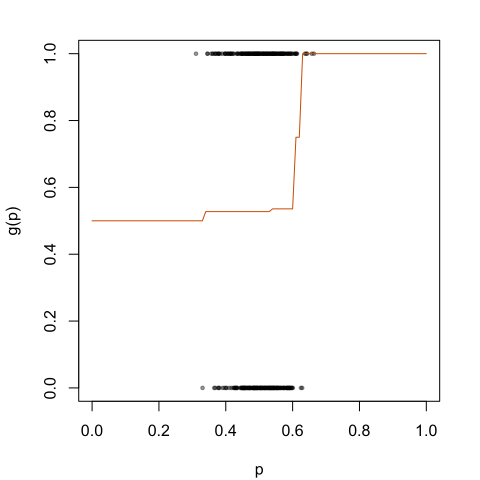
5.4.3 Beta calibration
library(betacal)# Beta calibration using the paper packagebc <-beta_calibration(p = data_calib$scores, y = data_calib$d, parameters ="abm"# 3 parameters a, b & m)
[1] -0.2880062
[1] -6.936872
The predicted values on the calibration set and on the test set:
The predicted probabilities \(p_u\) will then be transformed according to the logistic model depicted in Figure 5.3
par(mar =c(4.1, 4.1, 2.1, 2.1))plot( data_calib$scores, data_calib$d, type ="p", cex = .5, pch =19,col =adjustcolor("black", alpha.f = .4),xlab ="p", ylab ="g(p)",xlim =c(0, 1))lines(x = tb_scores_c_beta$linspace, y = tb_scores_c_beta$scores_c, type ="l", col ="#D55E00")
Figure 5.3: Recalibration Using Beta Calibration
5.4.4 Local regression
library(locfit)
We consider three versions here, with different degrees for the polynomials (0, 1, or 2). We set the number of nearest neighbors to use to nn =0.15, that is, 15%.
par(mar =c(4.1, 4.1, 2.1, 2.1))plot( data_calib$scores, data_calib$d, type ="p", cex = .5, pch =19,col =adjustcolor("black", alpha.f = .4),xlab ="p", ylab ="g(p)",xlim =c(0, 1))lines(x = linspace, y = score_c_locfit_2_linspace, type ="l", col ="#D55E00")
Figure 5.6: Recalibration Using Local Regression
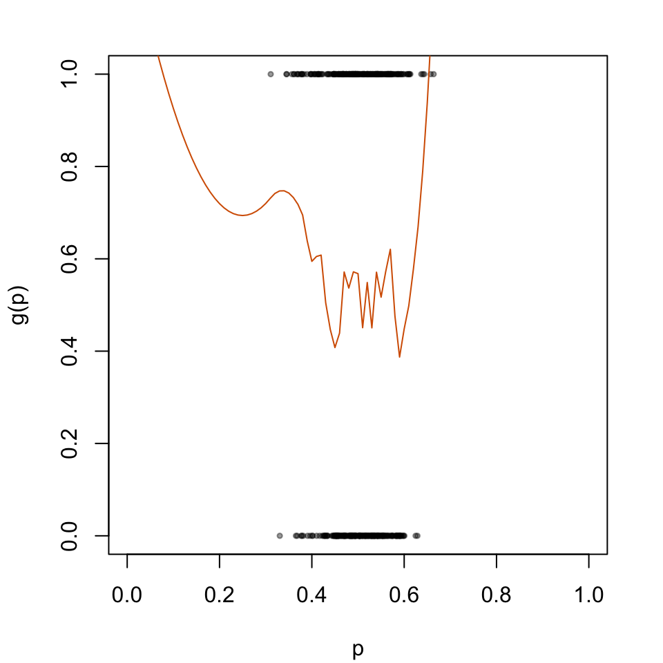
5.5 Helper Functions
First, we need the functions that fit the Random Forest (for both regression and classification) and the functions that compute the performance metrics and the calibration metrics (those defined in Chapter 1).
5.5.1 Fit the Random Forest
In the case of regression:
library(randomForest)#' Apply Random Forest algorithm#' #' @param train_data train dataset#' @param calib_data calibration dataset#' @param test_data test datasetapply_rf <-function(train_data, calib_data, test_data) { rf <-randomForest( d ~ ., data = train_data, nodesize =0.1*nrow(train_data),ntree =500 ) scores_train <-predict(rf, newdata = train_data, type ="response") scores_calib <-predict(rf, newdata = calib_data, type ="response") scores_test <-predict(rf, newdata = test_data, type ="response")list(scores_train = scores_train,scores_calib = scores_calib,scores_test = scores_test )}
In the case of classification:
#' Apply Random Forest algorithm as a classifier#' #' @param train_data train dataset#' @param calib_data calibration dataset#' @param test_data test datasetapply_rf_vote <-function(train_data, calib_data, test_data) { rf <-randomForest( d ~ ., data = train_data |>mutate(d =factor(d)), nodesize =0.1*nrow(train_data),ntree =500 ) scores_train <-predict(rf, newdata = train_data, type ="vote")[, "1"] scores_calib <-predict(rf, newdata = calib_data, type ="vote")[, "1"] scores_test <-predict(rf, newdata = test_data, type ="vote")[, "1"]list(scores_train = scores_train,scores_calib = scores_calib,scores_test = scores_test )}
5.5.2 Standard Metrics
#' Computes goodness of fit metrics#' #' @param true_prob true probabilities#' @param obs observed values (binary outcome)#' @param pred predicted scores#' @param threshold classification threshold (default to `.5`)compute_gof <-function(true_prob, obs, pred, threshold = .5) {# MSE mse <-mean((true_prob - pred)^2) pred_class <-as.numeric(pred > threshold) confusion_tb <-tibble(obs = obs,pred = pred_class ) |>count(obs, pred) TN <- confusion_tb |>filter(obs ==0, pred ==0) |>pull(n) TP <- confusion_tb |>filter(obs ==1, pred ==1) |>pull(n) FP <- confusion_tb |>filter(obs ==0, pred ==1) |>pull(n) FN <- confusion_tb |>filter(obs ==1, pred ==0) |>pull(n)if (length(TN) ==0) TN <-0if (length(TP) ==0) TP <-0if (length(FP) ==0) FP <-0if (length(FN) ==0) FN <-0 n_pos <-sum(obs ==1) n_neg <-sum(obs ==0)# Accuracy acc <- (TP + TN) / (n_pos + n_neg)# Missclassification rate missclass_rate <-1- acc# Sensitivity (True positive rate)# proportion of actual positives that are correctly identified as such TPR <- TP / n_pos# Specificity (True negative rate)# proportion of actual negatives that are correctly identified as such TNR <- TN / n_neg# False positive Rate FPR <- FP / n_negtibble(mse = mse,accuracy = acc,missclass_rate = missclass_rate,sensitivity = TPR,specificity = TNR,threshold = threshold,FPR = FPR )}
#' Computes summary statistics for binomial observed data and predicted scores#' returned by a model#'#' @param obs vector of observed events#' @param scores vector of predicted probabilities#' @param k number of classes to create (quantiles, default to `10`)#' @param threshold classification threshold (default to `.5`)#' @return a tibble where each row correspond to a bin, and each columns are:#' - `score_class`: level of the decile that the bin represents#' - `nb`: number of observation#' - `mean_obs`: average of obs (proportion of positive events)#' - `mean_score`: average predicted score (confidence)#' - `sum_obs`: number of positive events (number of positive events)#' - `accuracy`: accuracy (share of correctly predicted, using the#' threshold)get_summary_bins <-function(obs, scores,k =10, threshold = .5) { breaks <-quantile(scores, probs = (0:k) / k) tb_breaks <-tibble(breaks = breaks, labels =0:k) |>group_by(breaks) |>slice_tail(n =1) |>ungroup() x_with_class <-tibble(obs = obs,score = scores, ) |>mutate(score_class =cut( score,breaks = tb_breaks$breaks,labels = tb_breaks$labels[-1],include.lowest =TRUE ),pred_class =ifelse(score > threshold, 1, 0),correct_pred = obs == pred_class ) x_with_class |>group_by(score_class) |>summarise(nb =n(),mean_obs =mean(obs),mean_score =mean(score), # confidencesum_obs =sum(obs),accuracy =mean(correct_pred) ) |>ungroup() |>mutate(score_class =as.character(score_class) |>as.numeric() ) |>arrange(score_class)}#' Expected Calibration Error#'#' @param obs vector of observed events#' @param scores vector of predicted probabilities#' @param k number of classes to create (quantiles, default to `10`)#' @param threshold classification threshold (default to `.5`)e_calib_error <-function(obs, scores, k =10, threshold = .5) { summary_bins <-get_summary_bins(obs = obs, scores = scores, k = k, threshold = .5 ) summary_bins |>mutate(ece_bin = nb *abs(accuracy - mean_score)) |>summarise(ece =1/sum(nb) *sum(ece_bin)) |>pull(ece)}
#' Quantile-Based MSE#'#' @param obs vector of observed events#' @param scores vector of predicted probabilities#' @param k number of classes to create (quantiles, default to `10`)#' @param threshold classification threshold (default to `.5`)qmse_error <-function(obs, scores, k =10, threshold = .5) { summary_bins <-get_summary_bins(obs = obs, scores = scores, k = k, threshold = .5 ) summary_bins |>mutate(qmse_bin = nb * (mean_obs - mean_score)^2) |>summarise(qmse =1/sum(nb) *sum(qmse_bin)) |>pull(qmse)}
library(binom)#' @param obs vector of observed events#' @param scores vector of predicted probabilities#' @param tau value at which to compute the confidence interval#' @param nn fraction of nearest neighbors#' @prob level of the confidence interval (default to `.95`)#' @param method Which method to use to construct the interval. Any combination#' of c("exact", "ac", "asymptotic", "wilson", "prop.test", "bayes", "logit",#' "cloglog", "probit") is allowed. Default is "all".#' @return a tibble with a single row that corresponds to estimations made in#' the neighborhood of a probability $p=\tau$`, using the fraction `nn` of#' neighbors, where the columns are:#' - `score`: score tau in the neighborhood of which statistics are computed#' - `mean`: estimation of $E(d | s(x) = \tau)$#' - `lower`: lower bound of the confidence interval#' - `upper`: upper bound of the confidence intervallocal_ci_scores <-function(obs, scores, tau, nn,prob = .95,method ="probit") {# Identify the k nearest neighbors based on hat{p} k <-round(length(scores) * nn) rgs <-rank(abs(scores - tau), ties.method ="first") idx <-which(rgs <= k)binom.confint(x =sum(obs[idx]),n =length(idx),conf.level = prob,methods = method )[, c("mean", "lower", "upper")] |>tibble() |>mutate(xlim = tau) |>relocate(xlim, .before = mean)}#' Compute the Weighted Mean Squared Error to assess the calibration of a model#'#' @param local_scores tibble with expected scores obtained with the #' `local_ci_scores()` function#' @param scores vector of raw predicted probabilitiesweighted_mse <-function(local_scores, scores) {# To account for border bias (support is [0,1]) scores_reflected <-c(-scores, scores, 2- scores)if (all(is.na(scores))) { wmse <-NA } else { dens <-density(x = scores_reflected, from =0, to =1, n =length(local_scores$xlim) )# The weights weights <- dens$y wmse <- local_scores |>mutate(wmse_p = (xlim - mean)^2,weight =!!weights ) |>summarise(wmse =sum(weight * wmse_p) /sum(weight)) |>pull(wmse) }}
5.5.4 Recalibration Functions
We define the recalibrate() function which recalibrates a model using the observed events \(d\), the predicted associated probabilities \(p\) and a given recalibration technique (as presented above in Section 2.2).
#' Recalibrates scores using a calibration#' #' @param obs_calib vector of observed events in the calibration set#' @param scores_calib vector of predicted probabilities in the calibration set#' #' @param obs_test vector of observed events in the test set#' @param scores_test vector of predicted probabilities in the test set#' @param method recalibration method (`"platt"` for Platt-Scaling, #' `"isotonic"` for isotonic regression, `"beta"` for beta calibration, #' `"locfit"` for local regression)#' @param params list of named parameters to use in the local regression #' (`nn` for fraction of nearest neighbors to use, `deg` for degree)#' @param linspace vector of alues at which to compute the recalibrated scores#' @returns list of three elements: recalibrated scores on the calibration set,#' recalibrated scores on the test set, and recalibrated scores on a segment #' of valuesrecalibrate <-function(obs_calib, pred_calib, obs_test, pred_test,method =c("platt", "isotonic", "beta", "locfit"),params =NULL,linspace =NULL) {if (is.null(linspace)) linspace <-seq(0, 1, length.out =101) data_calib <-tibble(d = obs_calib, scores = pred_calib) data_test <-tibble(d = obs_test, scores = pred_test)if (method =="platt") {# Recalibrator lr <-glm( d ~ scores, family =binomial(link ='logit'), data = data_calib )# Recalibrated scores on calib/test sets score_c_calib <-predict(lr, newdata = data_calib, type ="response") score_c_test <-predict(lr, newdata = data_test, type ="response")# Recalibrated scores on [0,1] score_c_linspace <-predict( lr, newdata =tibble(scores = linspace), type ="response" ) } elseif (method =="isotonic") { iso <-isoreg(x = data_calib$scores, y = data_calib$d) fit_iso <-as.stepfun(iso) score_c_calib <-fit_iso(data_calib$scores) score_c_test <-fit_iso(data_test$scores) score_c_linspace <-fit_iso(linspace) } elseif (method =="beta") {capture.output({ bc <-try(beta_calibration(p = data_calib$scores, y = data_calib$d, parameters ="abm"# 3 parameters a, b & m )) })if (!inherits(bc, "try-error")) { score_c_calib <-beta_predict(p = data_calib$scores, bc) score_c_test <-beta_predict(p = data_test$scores, bc) score_c_linspace <-beta_predict(p = linspace, bc) } else { score_c_calib <- score_c_test <- score_c_linspace <-NA } } elseif (method =="locfit") { locfit_reg <-locfit(formula = d ~lp(scores, nn = params$nn, deg = params$deg), kern ="rect", maxk =200, data = data_calib ) score_c_calib <-predict(locfit_reg, newdata = data_calib) score_c_calib[score_c_calib <0] <-0 score_c_calib[score_c_calib >1] <-1 score_c_test <-predict(locfit_reg, newdata = data_test) score_c_test[score_c_test <0] <-0 score_c_test[score_c_test >1] <-1 score_c_linspace <-predict(locfit_reg, newdata = linspace) score_c_linspace[score_c_linspace <0] <-0 score_c_linspace[score_c_linspace >1] <-1 } else {stop(str_c('Wrong method. Use one of the following:','"platt", "isotonic", "beta", "locfit"' )) }# Format results in tibbles:# For calibration set tb_score_c_calib <-tibble(d = obs_calib,p_u = pred_calib,p_c = score_c_calib )# For test set tb_score_c_test <-tibble(d = obs_test,p_u = pred_test,p_c = score_c_test )# For linear space tb_score_c_linspace <-tibble(linspace = linspace,p_c = score_c_linspace )list(tb_score_c_calib = tb_score_c_calib,tb_score_c_test = tb_score_c_test,tb_score_c_linspace = tb_score_c_linspace )}
Let us also define a function that computes the different calibration metrics for a single replication of the simulations.
#' Computes the calibration metrics for a set of observed and predicted #' probabilities#' #' @param obs observed events#' @param scores predicted scores#' @param true_probas true probabilities from the PGD (to compute MSE)#' @param linspace vector of values at which to compute the WMSE#' @param k number of classes (bins) to create (default to `10`)compute_metrics <-function(obs, scores, true_probas, linspace,k =10) { mse <-mean((true_probas - scores)^2) brier <-brier_score(obs = obs, scores = scores)if (length(unique(scores)) >1) { ece <-e_calib_error(obs = obs, scores = scores, k = k, threshold = .5) qmse <-qmse_error(obs = obs, scores = scores, k = k, threshold = .5) } else { ece <-NA qmse <-NA } expected_events <-map(.x = linspace,.f =~local_ci_scores(obs = obs, scores = scores,tau = .x, nn = .15, prob = .95, method ="probit") ) |>bind_rows() wmse <-weighted_mse(local_scores = expected_events, scores = scores)tibble(mse = mse, brier = brier, ece = ece, qmse = qmse, wmse = wmse )}
Lastly, we define the f_simul_recalib_rf() function to perform recalibration for a single simulation.
Let us apply the different techniques to recalibrate the predicted values of the random forests, both for the regression forests and the classification forests.
We (re)define the function compute_gof_simul() to apply compute_gof(), defined above, to compute the different standard performance metrics on recalibrated predicted scores (see Section 1.4 in Chapter 1):
#' Computes goodness of fit metrics for a replication#'#' @param n_obs desired number of observation#' @param seed random seed to use#' @param type of Random Forest to use (either `regression` or `classification`) #' @param linspace vector of alues at which to compute the recalibrated scorescompute_gof_simul <-function(n_obs, seed,type =c("regression", "classification"),linspace =NULL) {if (is.null(linspace)) linspace <-seq(0, 1, length.out =100) current_seed <- seed# Generate Data current_data <-get_samples(n_obs = n_obs, seed = current_seed )# Get the calib/test datasets with true probabilities data_all_train <- current_data$tb_train data_all_calib <- current_data$tb_calib data_all_test <- current_data$tb_test# Test set true_prob_test <- current_data$true_probas_test$p obs_test <- data_all_test$d## Fit the RFif (type =="regression"){ scores <-apply_rf(train_data = data_all_train,calib_data = data_all_calib,test_data = data_all_test ) } elseif (type =="classification"){ scores <-apply_rf_vote(train_data = data_all_train,calib_data = data_all_calib,test_data = data_all_test ) } else {stop("Random Forest type should be either regression or classification.") } pred_calib <- scores$scores_calib pred_test <- scores$scores_test# Recalibration methods <-c("platt", "isotonic", "beta", "locfit", "locfit", "locfit") params <-list(NULL, NULL, NULL, list(nn = .15, deg =0), list(nn = .15, deg =1), list(nn = .15, deg =2) ) method_names <-c("platt", "isotonic", "beta", "locfit_0", "locfit_1", "locfit_2" ) res_recalibration <-map2(.x = methods,.y = params,.f =~recalibrate(obs_calib = data_all_calib$d, pred_calib = pred_calib, obs_test = data_all_test$d, pred_test = pred_test,method = .x,params = .y,linspace = linspace ) )names(res_recalibration) <- method_names# Initialisation gof_metrics_simul_test <-tibble()# Calculate standard metrics## With Recalibration: loop on methodsfor (method in method_names) { res_recalibration_current <- res_recalibration[[method]]### Computation of metrics only on the test set metrics_simul_test <-map(.x =seq(0, 1, by = .01), # we vary the probability threshold.f =~compute_gof(true_prob = true_prob_test,obs = obs_test,#### the predictions are now recalibrated:pred = res_recalibration_current$tb_score_c_test$p_c,threshold = .x ) ) |>list_rbind() metrics_simul_test <- metrics_simul_test |>mutate(seed = current_seed,method = method ) gof_metrics_simul_test <- gof_metrics_simul_test |>bind_rows(metrics_simul_test) } gof_metrics_simul_test}
Let us visualize how the performance metrics vary from one replication to another, on the test set.
#' Boxplots for the simulations to visualize the distribution of some #' traditional metrics as a function of the probability threshold.#' And, ROC curves#' The resulting figure is a panel of graphs, with vayring values for the #' transformation applied to the probabilities (in columns) and different #' metrics (in rows).#' #' @param tb_metrics tibble with computed metrics for the simulations#' @param metrics names of the metrics computedboxplot_simuls_metrics <-function(tb_metrics, metrics) {par(mfrow =c(2, length(metrics)%/%2+1))for (i_metric in1:length(metrics)) { metric <- metrics[i_metric] tb_metrics_current <- tb_metricsif (metric =="roc") { seeds <-unique(tb_metrics_current$seed)par(mar =c(4.1, 4.1, 2.1, 2.1))plot(0:1, 0:1,type ="l", col =NULL,xlim =0:1, ylim =0:1,xlab ="False Positive Rate",ylab ="True Positive Rate",main ="" )for (i_seed in1:length(seeds)) { tb_metrics_current_seed <- tb_metrics_current |>filter(seed == seeds[i_seed])lines(x = tb_metrics_current_seed$FPR,y = tb_metrics_current_seed$sensitivity,lwd =2, col =adjustcolor("black", alpha.f = .04) ) }segments(0, 0, 1, 1, col ="black", lty =2) } else {# not ROC tb_metrics_current <- tb_metrics_current |>filter(threshold %in%seq(0, 1, by = .1)) form <-str_c(metric, "~threshold")par(mar =c(4.1, 4.1, 2.1, 2.1))boxplot(formula(form), data = tb_metrics_current,xlab ="Threshold", ylab = metric ) } }}
Figure 5.19: Calibration metrics for various recalibration techniques applied to the Random Forest scores (regression); results from the 200 replications.
Figure 5.20: Calibration metrics for various recalibration techniques applied to the Random Forest scores (classification); results from the 200 replications.
We bind the results and define a plotting function.
Figure 5.21: True MSE for the Random Forest (regression or classification) scores with various scores used as predictions (true probabilities, uncalibrated scores, recalibreated scores), on the calibration set and on the test set; results from the 200 replications.
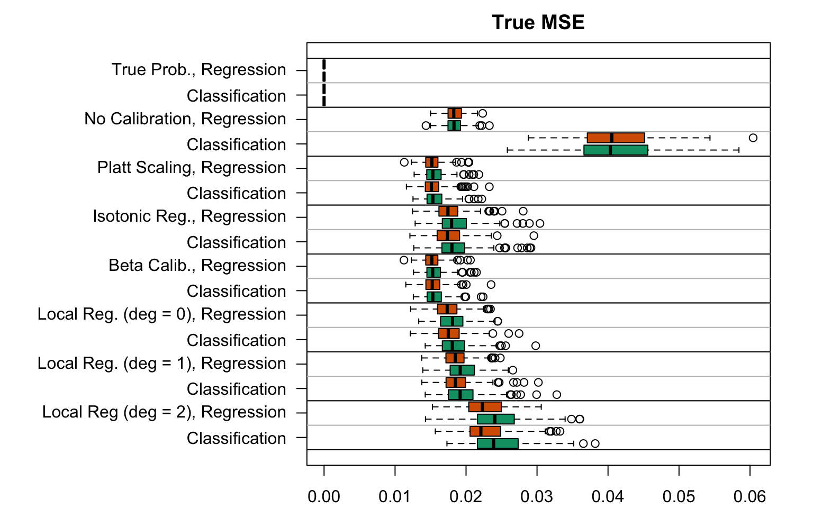
Display R codes used to create the Figure.
plot_metric_simuls(metric ="brier")
Figure 5.22: Brier Score for the Random Forest (regression or classification) scores with various scores used as predictions (true probabilities, uncalibrated scores, recalibreated scores), on the calibration set and on the test set; results from the 200 replications.
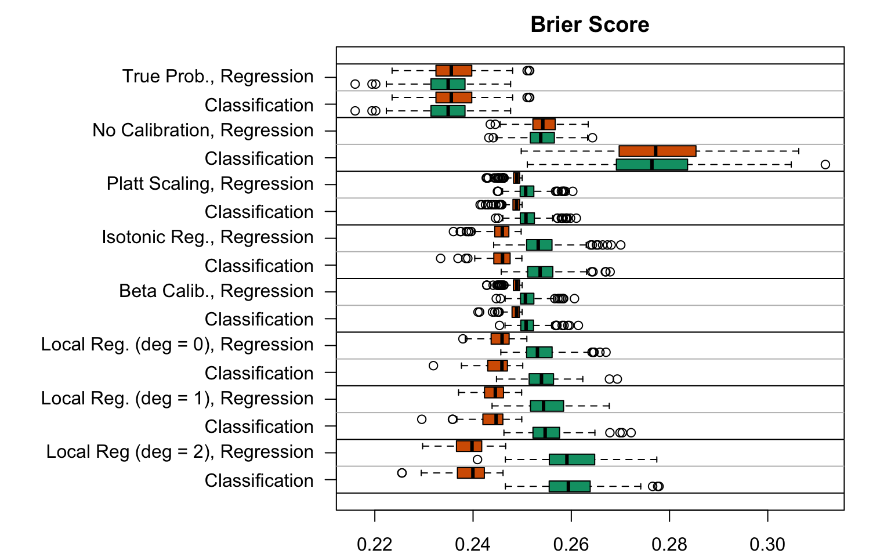
Display R codes used to create the Figure.
plot_metric_simuls(metric ="ece")
Figure 5.23: Expected Calibration Error for the Random Forest (regression or classification) scores with various scores used as predictions (true probabilities, uncalibrated scores, recalibreated scores), on the calibration set and on the test set; results from the 200 replications.
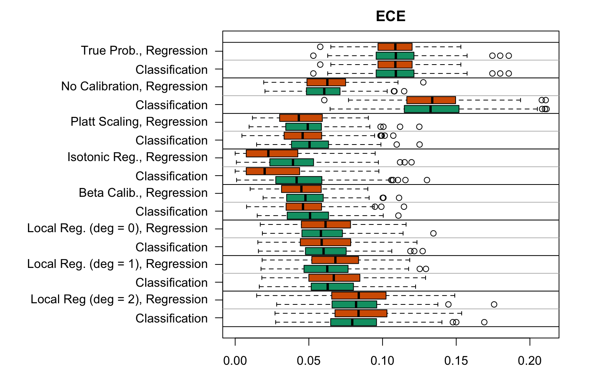
Display R codes used to create the Figure.
plot_metric_simuls(metric ="qmse")
Figure 5.24: Quantile-based Mean Squared Error for the Random Forest (regression or classification) scores with various scores used as predictions (true probabilities, uncalibrated scores, recalibreated scores), on the calibration set and on the test set; results from the 200 replications.
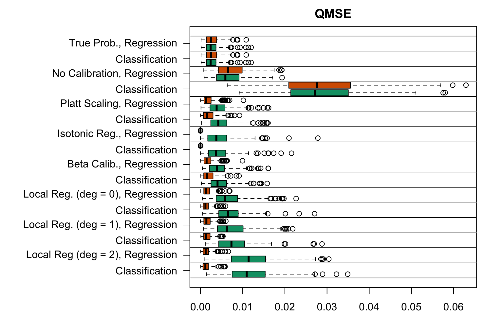
Display R codes used to create the Figure.
plot_metric_simuls(metric ="wmse")
Figure 5.25: Weighted Mean Squared Error for the Random Forest (regression or classification) scores with various scores used as predictions (true probabilities, uncalibrated scores, recalibreated scores), on the calibration set and on the test set; results from the 200 replications.
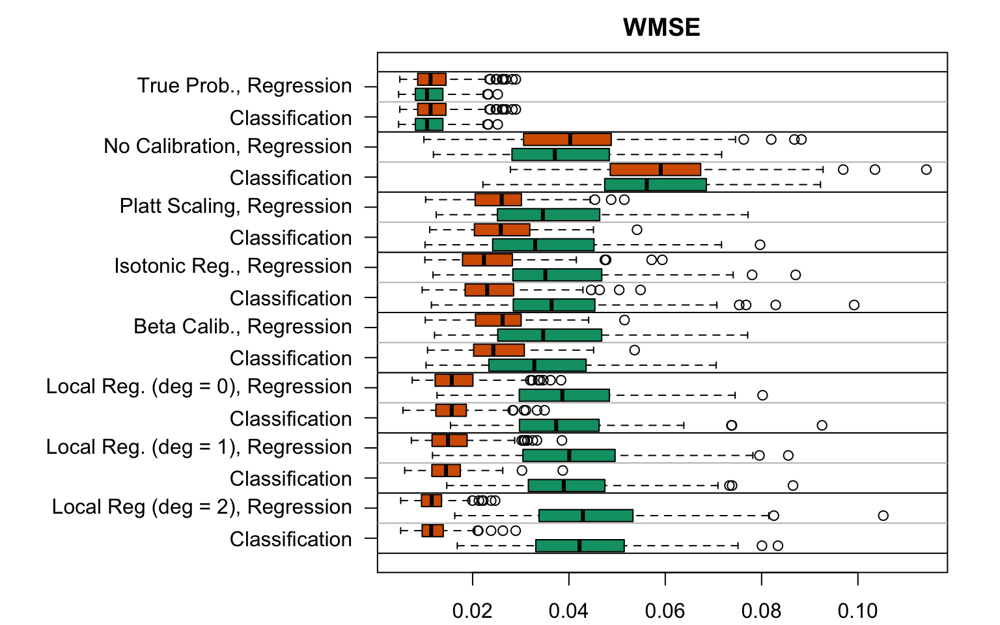
5.9 Recalibration Visualizations
5.9.1 Helper Functions
5.9.1.1 Functions for Quantile-based Bins
First, we define a function to get the calibration curves for a single simulation, and for a single recalibration method.
#' Get the calibration curve for one simulation for the random forest,#' using the quantile-based approach, for recalibrated results#' for a single recalibration method#' #' @param simul results of a simulation obtained with simul_rf#' @param linspace values at which to compute the mean observed event when #' computing the WMSE#' @param method name of the recalibration method to focus oncalib_curve_method_quant_simul_c_rf <-function(simul,linspace =NULL, method) {if (is.null(linspace)) linspace <-seq(0, 1, length.out =101) n_obs <- simul$n_obs seed <- simul$seed# Get the data used to train the forest data <-get_samples(n_obs = n_obs, seed = seed) tb_train <- data$tb_train tb_calib <- data$tb_calib tb_test <- data$tb_test# Uncalibrated Scores estimated by the RF scores_calib <- simul$res_recalibration[[method]]$tb_score_c_calib$p_u scores_test <- simul$res_recalibration[[method]]$tb_score_c_test$p_u# Recalibrated Scores of the RF, for the current method scores_c_test <- simul$res_recalibration[[method]]$tb_score_c_test$p_c scores_c_calib <- simul$res_recalibration[[method]]$tb_score_c_calib$p_c# Summary on each bin, uncalibrated scores summary_bins_calib <-get_summary_bins(obs = tb_calib$d,scores = scores_calib, k =10, threshold = .5) summary_bins_test <-get_summary_bins(obs = tb_test$d,scores = scores_test, k =10, threshold = .5)# Summary on each bin, recalibrated scoresif (length(unique(scores_c_calib)) ==1) { summary_bins_c_calib <-tibble() } else { summary_bins_c_calib <-get_summary_bins(obs = tb_calib$d,scores = scores_c_calib, k =10, threshold = .5) }if (length(unique(scores_c_test)) ==1) { summary_bins_c_test <-tibble() } else { summary_bins_c_test <-get_summary_bins(obs = tb_test$d,scores = scores_c_test, k =10, threshold = .5) } summary_bins_calib |>mutate(sample ="calibration", type ="uncalibrated") |>bind_rows( summary_bins_test |>mutate(sample ="test", type ="uncalibrated") ) |>bind_rows( summary_bins_c_calib |>mutate(sample ="calibration", type ="recalibrated") ) |>bind_rows( summary_bins_c_test |>mutate(sample ="test", type ="recalibrated") ) |>select(score_class, mean_score, mean_obs, sample, type) |>mutate(n_obs = n_obs,seed = seed,method = method )}
Then, we define a function that applies the first one to all recalibration methods for a single simulation.
#' Get the calibration curve for one simulation for the random forest,#' using the quantile-based approach, for recalibrated results#' for all recalibration methods performed in the simulation#' #' @param simul results of a simulation obtained with simul_rf#' @param linspace values at which to compute the mean observed event when #' computing the WMSEcalib_curve_quant_simul_c_rf <-function(simul, linspace =NULL) { methods <-names(simul$res_recalibration)map(.x = methods, .f =~calib_curve_method_quant_simul_c_rf(simul = simul, linspace = linspace, method = .x ) ) |>list_rbind()}
5.9.1.2 Functions for Local Regression
First, we define a function to get the calibration curves for a single simulation, and for a single recalibration method.
#' Get the calibration curve for one simulation for the random forest,#' using the local regression approach, for recalibrated results#' for a single recalibration method#' #' @param simul results of a simulation obtained with simul_rf#' @param linspace values at which to compute the mean observed event when #' computing the WMSE#' @param method name of the recalibration method to focus oncalib_curve_method_locfit_simul_c_rf <-function(simul,linspace =NULL, method) {if (is.null(linspace)) linspace <-seq(0, 1, length.out =101) n_obs <- simul$n_obs seed <- simul$seed# Get the data used to train the forest data <-get_samples(n_obs = n_obs, seed = seed) tb_train <- data$tb_train tb_calib <- data$tb_calib tb_test <- data$tb_test# Uncalibrated Scores estimated by the RF scores_calib <- simul$res_recalibration[[method]]$tb_score_c_calib$p_u scores_test <- simul$res_recalibration[[method]]$tb_score_c_test$p_u# Recalibrated Scores of the RF, for the current method scores_c_calib <- simul$res_recalibration[[method]]$tb_score_c_calib$p_c scores_c_test <- simul$res_recalibration[[method]]$tb_score_c_test$p_c# Add a little noise (otherwise, R may crash...) scores_calib <- scores_calib +rnorm(length(scores_calib), 0, .001) scores_test <- scores_test +rnorm(length(scores_test), 0, .001) scores_c_calib <- scores_c_calib +rnorm(length(scores_c_calib), 0, .001) scores_c_test <- scores_c_test +rnorm(length(scores_c_test), 0, .001)# Local Regression, uncalibrated scores locfit_0_calib <-locfit(formula = d ~lp(score, nn =0.15, deg =0), kern ="rect", maxk =200, data =tibble(d = tb_calib$d, score = scores_calib) ) locfit_0_test <-locfit(formula = d ~lp(score, nn =0.15, deg =0), kern ="rect", maxk =200, data =tibble(d = tb_test$d, score = scores_test) ) score_c_locfit_0_calib <-predict(locfit_0_calib, newdata = linspace) score_c_locfit_0_test <-predict(locfit_0_test, newdata = linspace)# Make sure to have values in [0,1] score_c_locfit_0_calib[score_c_locfit_0_calib >1] <-1 score_c_locfit_0_calib[score_c_locfit_0_calib <0] <-0 score_c_locfit_0_test[score_c_locfit_0_test >1] <-1 score_c_locfit_0_test[score_c_locfit_0_test <0] <-0# Local Regression, recalibrated scoresif (length(unique(scores_c_calib)) ==1) { score_c_locfit_0_c_calib <-rep(NA, length(linspace)) } else { locfit_0_c_calib <-locfit(formula = d ~lp(score, nn =0.15, deg =0), kern ="rect", maxk =200, data =tibble(d = tb_calib$d, score = scores_c_calib) ) score_c_locfit_0_c_calib <-predict(locfit_0_c_calib, newdata = linspace)# Make sure to have values in [0,1] score_c_locfit_0_c_calib[score_c_locfit_0_c_calib >1] <-1 score_c_locfit_0_c_calib[score_c_locfit_0_c_calib <0] <-0 }if (length(unique(scores_c_test)) ==1) { score_c_locfit_0_c_test <-rep(NA, length(linspace)) } else { locfit_0_c_test <-locfit(formula = d ~lp(score, nn =0.15, deg =0), kern ="rect", maxk =200, data =tibble(d = tb_test$d, score = scores_c_test) ) score_c_locfit_0_c_test <-predict(locfit_0_c_test, newdata = linspace)# Make sure to have values in [0,1] score_c_locfit_0_c_test[score_c_locfit_0_c_test >1] <-1 score_c_locfit_0_c_test[score_c_locfit_0_c_test <0] <-0 } res_calib <-tibble(xlim = linspace,locfit_pred = score_c_locfit_0_calib,sample ="calibration",type ="uncalibrated" ) res_test <-tibble(xlim = linspace,locfit_pred = score_c_locfit_0_test,sample ="test",type ="uncalibrated" ) res_c_calib <-tibble(xlim = linspace,locfit_pred = score_c_locfit_0_c_calib,sample ="calibration",type ="recalibrated" ) res_c_test <-tibble(xlim = linspace,locfit_pred = score_c_locfit_0_c_test,sample ="test",type ="recalibrated" ) res_calib |>bind_rows(res_test) |>bind_rows(res_c_calib) |>bind_rows(res_c_test) |>mutate(n_obs = n_obs,seed = seed,method = method )}
Then, we define a function that applies the first one to all recalibration methods for a single simulation.
#' Get the calibration curve for one simulation for the random forest,#' using the local regression approach, for recalibrated results#' for all recalibration methods performed in the simulation#' #' @param simul results of a simulation obtained with simul_rf#' @param linspace values at which to compute the mean observed event when #' computing the WMSEcalib_curve_locfit_simul_c_rf <-function(simul, linspace =NULL) { methods <-names(simul$res_recalibration)map(.x = methods, .f =~calib_curve_method_locfit_simul_c_rf(simul = simul, linspace = linspace, method = .x ) ) |>list_rbind()}
5.9.1.3 Functions for Moving Average
First, we define a function to get the calibration curves for a single simulation, and for a single recalibration method.
#' Get the calibration curve for one simulation for the random forest,#' using moving averages#' #' @param simul results of a simulation obtained with simul_rf#' @param linspace values at which to compute the mean observed event when #' computing the WMSE#' @param method name of the recalibration method to focus oncalib_curve_method_ma_simul_c_rf <-function(simul,linspace =NULL, method) {if (is.null(linspace)) linspace <-seq(0, 1, length.out =101) n_obs <- simul$n_obs seed <- simul$seed# Get the data used to train the forest data <-get_samples(n_obs = n_obs, seed = seed) tb_train <- data$tb_train tb_calib <- data$tb_calib tb_test <- data$tb_test# Uncalibrated Scores estimated by the RF scores_calib <- simul$res_recalibration[[method]]$tb_score_c_calib$p_u scores_test <- simul$res_recalibration[[method]]$tb_score_c_test$p_u# Recalibrated Scores of the RF, for the current method scores_c_test <- simul$res_recalibration[[method]]$tb_score_c_test$p_c scores_c_calib <- simul$res_recalibration[[method]]$tb_score_c_calib$p_c calib_ma_calib <-map(.x = linspace,.f =~local_ci_scores(obs = tb_calib$d,scores = scores_calib,tau = .x, nn = .15, prob = .5, method ="probit") ) |>bind_rows() |>mutate(sample ="calibration", type ="uncalibrated") calib_ma_test <-map(.x = linspace,.f =~local_ci_scores(obs = tb_test$d,scores = scores_test,tau = .x, nn = .15, prob = .5, method ="probit") ) |>bind_rows() |>mutate(sample ="test", type ="uncalibrated")if (length(unique(scores_c_calib)) ==1) { calib_c_ma_calib <-tibble() } else { calib_c_ma_calib <-map(.x = linspace,.f =~local_ci_scores(obs = tb_calib$d,scores = scores_c_calib,tau = .x, nn = .15, prob = .5, method ="probit") ) |>bind_rows() |>mutate(sample ="calibration", type ="recalibrated") }if (length(unique(scores_c_test)) ==1) { calib_c_ma_test <-tibble() } else { calib_c_ma_test <-map(.x = linspace,.f =~local_ci_scores(obs = tb_test$d,scores = scores_c_test,tau = .x, nn = .15, prob = .5, method ="probit") ) |>bind_rows() |>mutate(sample ="test", type ="recalibrated") } calib_ma_calib |>bind_rows(calib_ma_test) |>bind_rows(calib_c_ma_calib) |>bind_rows(calib_c_ma_test) |>mutate(n_obs = n_obs,seed = seed,method = method )}
Then, we define a function that applies the first one to all recalibration methods for a single simulation.
#' Get the calibration curve for one simulation for the random forest,#' using the local regression approach, for recalibrated results#' for all recalibration methods performed in the simulation#' #' @param simul results of a simulation obtained with simul_rf#' @param linspace values at which to compute the mean observed event when #' computing the WMSEcalib_curve_ma_simul_c_rf <-function(simul, linspace =NULL) { methods <-names(simul$res_recalibration)map(.x = methods, .f =~calib_curve_method_ma_simul_c_rf(simul = simul, linspace = linspace, method = .x ) ) |>list_rbind()}
We can have a look at how many simulations did not cause any error while computing the values for the calibration curve. When the recalibrated scores are constant, it is not possible to define bins.
We can have a look at how many simulations did not cause any error while computing the values for the calibration curve. When the recalibrated scores are constant, it is not possible to define bins.
Now, we can plot the calibration curve on each sample (calibration, test). Each line corresponds to the calibration curve of a single replicaiton of the simulations. The curves are shown in Figure 5.26 (regression), in Figure 5.27 (classification). The comparison between the two types of random forests are then made on a single grapg for each recalibration method from Figure 5.28 to Figure 5.33.
Figure 5.26: Calibration curve for the 200 replications of the estimation of the Random Forest (regression), obtained with quantile-based bins, using uncalibrated scores (left) or recalibrated scores (right), on the calibration set and on the test set.
Figure 5.27: Calibration curve for the 200 replications of the estimation of the Random Forest (regression), obtained with quantile-based bins, using uncalibrated scores (left) or recalibrated scores (right), on the calibration set and on the test set.
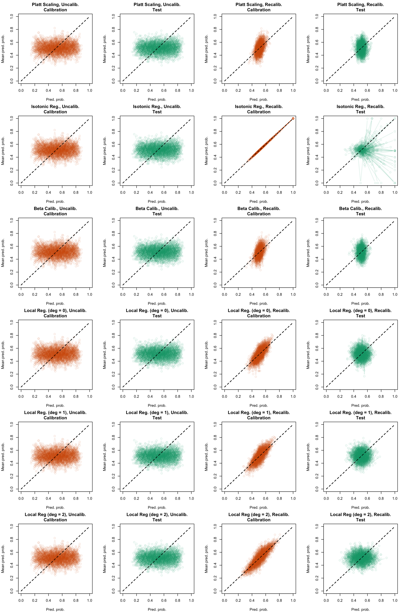
Display code to show the function used to create the Figures.
Figure 5.28: Calibration curve for the 200 replications of the estimation of the Random Forest (regression on top, classification at the bottom), obtained with quantile-based bins, using uncalibrated scores (left) or recalibrated scores using Platt-scaling (right), on the calibration set and on the test set.
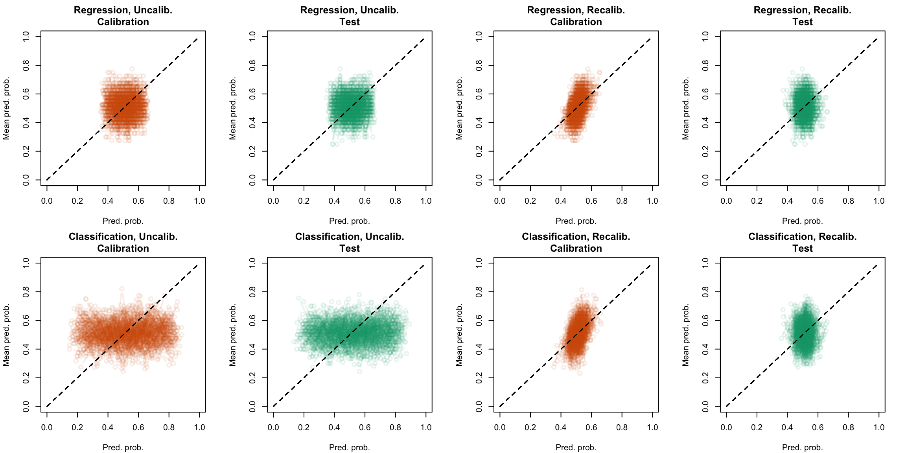
Display the R codes used to create the Figure.
plot_quant_both(method ="isotonic")
Figure 5.29: Calibration curve for the 200 replications of the estimation of the Random Forest (regression on top, classification at the bottom), obtained with quantile-based bins, using uncalibrated scores (left) or recalibrated scores using Isotonic regression (right), on the calibration set and on the test set.
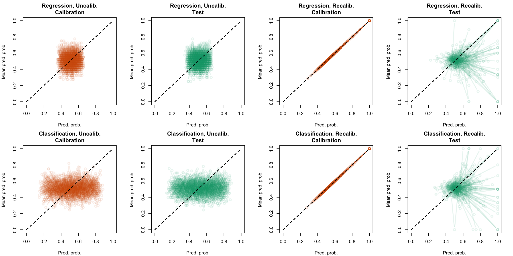
Display the R codes used to create the Figure.
plot_quant_both(method ="beta")
Figure 5.30: Calibration curve for the 200 replications of the estimation of the Random Forest (regression on top, classification at the bottom), obtained with quantile-based bins, using uncalibrated scores (left) or recalibrated scores using Beta regression (right), on the calibration set and on the test set.
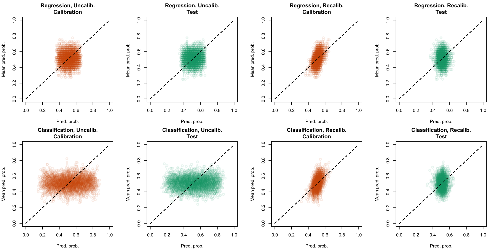
Display the R codes used to create the Figure.
plot_quant_both(method ="locfit_0")
Figure 5.31: Calibration curve for the 200 replications of the estimation of the Random Forest (regression on top, classification at the bottom), obtained with quantile-based bins, using uncalibrated scores (left) or recalibrated scores using local regression with deg=0 (right), on the calibration set and on the test set.
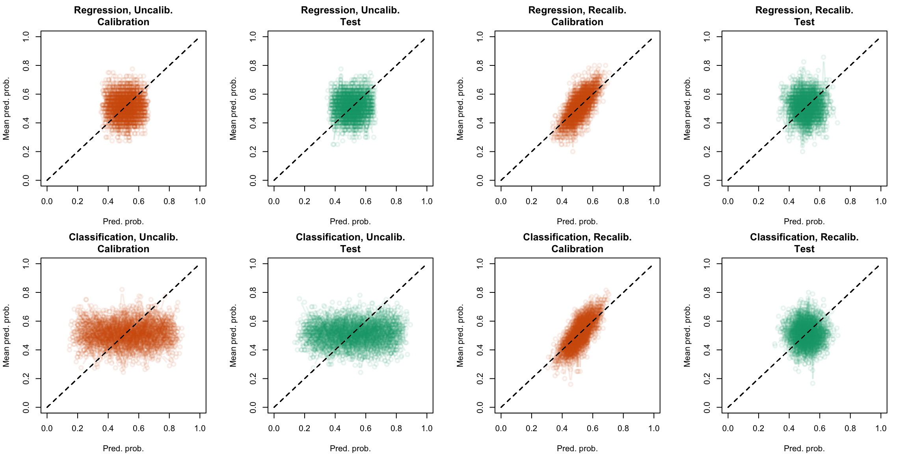
Display the R codes used to create the Figure.
plot_quant_both(method ="locfit_1")
Figure 5.32: Calibration curve for the 200 replications of the estimation of the Random Forest (regression on top, classification at the bottom), obtained with quantile-based bins, using uncalibrated scores (left) or recalibrated scores using local regression with deg=1 (right), on the calibration set and on the test set.
Display the R codes used to create the Figure.
plot_quant_both(method ="locfit_2")
Figure 5.33: Calibration curve for the 200 replications of the estimation of the Random Forest (regression on top, classification at the bottom), obtained with quantile-based bins, using uncalibrated scores (left) or recalibrated scores using local regression with deg=2 (right), on the calibration set and on the test set.
We can have a look at how many simulations did not cause any error while computing the values for the calibration curve. When the recalibrated scores are constant, it is not possible to define bins.
Newt, we can plot the calibration curves obtained with local regressions on each sample (calibration, test), contrasting between the two types of random forests (regression or classification), and also contrasting between the different recalibration techniques used (none, Platt-scaling, Isotonic regression, Beta regression, Local reggression with varying degrees.
Figure 5.34: Calibration curve for the 200 replications of the estimation of the Random Forest (regression), obtained with local regression, using uncalibrated scores (left) or recalibrated scores (right), on the calibration set and on the test set.
Figure 5.35: Calibration curve for the 200 replications of the estimation of the Random Forest (classification), obtained with local regression, using uncalibrated scores (left) or recalibrated scores (right), on the calibration set and on the test set.
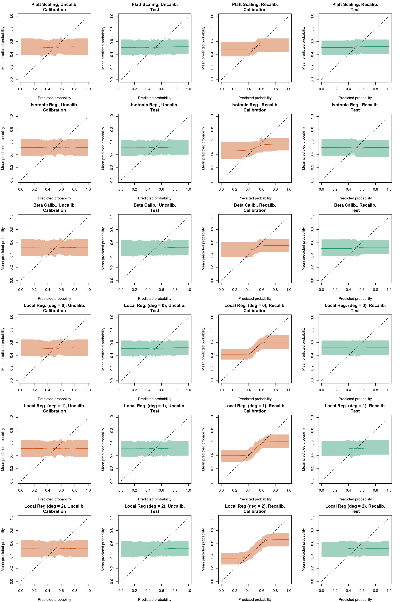
Display code to show the function used to create the Figures.
Figure 5.36: Calibration curve for the 200 replications of the estimation of the Random Forest (regression on top, classification at the bottom), obtained with local regression, using uncalibrated scores (left) or recalibrated scores using Platt-scaling (right), on the calibration set and on the test set.
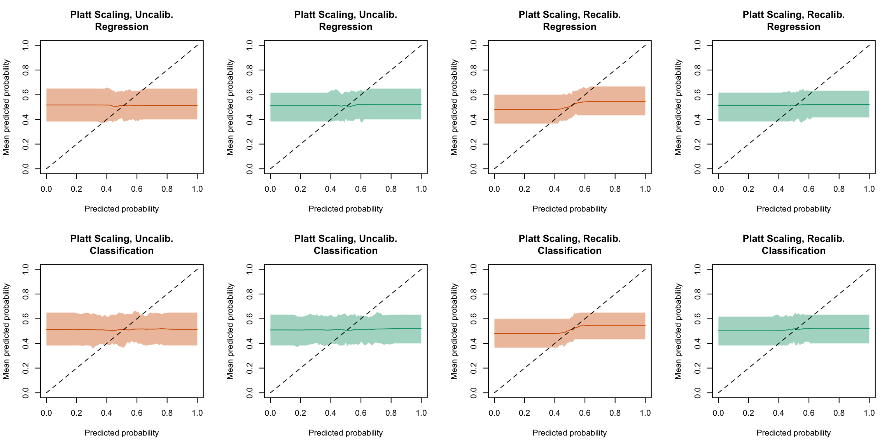
Display the R codes used to create the Figure.
plot_locfit_both(method ="isotonic")
Figure 5.37: Calibration curve for the 200 replications of the estimation of the Random Forest (regression on top, classification at the bottom), obtained with local regression, using uncalibrated scores (left) or recalibrated scores using Isotonic regression (right), on the calibration set and on the test set.
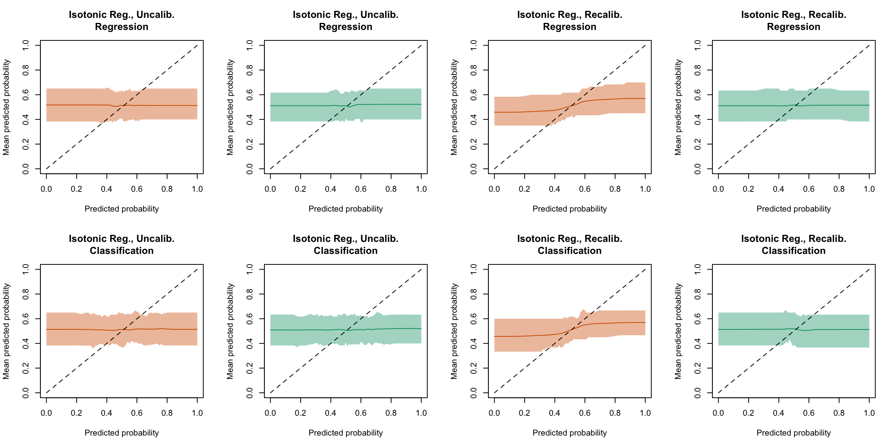
Display the R codes used to create the Figure.
plot_locfit_both(method ="beta")
Figure 5.38: Calibration curve for the 200 replications of the estimation of the Random Forest (regression on top, classification at the bottom), obtained with local regression, using uncalibrated scores (left) or recalibrated scores using Beta regression (right), on the calibration set and on the test set.
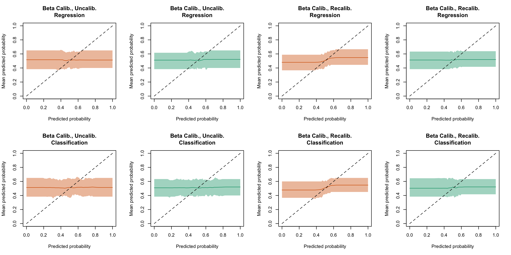
Display the R codes used to create the Figure.
plot_locfit_both(method ="locfit_0")
Figure 5.39: Calibration curve for the 200 replications of the estimation of the Random Forest (regression on top, classification at the bottom), obtained with local regression, using uncalibrated scores (left) or recalibrated scores using Local regression (with deg=0) (right), on the calibration set and on the test set.
Display the R codes used to create the Figure.
plot_locfit_both(method ="locfit_1")
Figure 5.40: Calibration curve for the 200 replications of the estimation of the Random Forest (regression on top, classification at the bottom), obtained with local regression, using uncalibrated scores (left) or recalibrated scores using Local regression (with deg=1) (right), on the calibration set and on the test set.
Display the R codes used to create the Figure.
plot_locfit_both(method ="locfit_2")
Figure 5.41: Calibration curve for the 200 replications of the estimation of the Random Forest (regression on top, classification at the bottom), obtained with local regression, using uncalibrated scores (left) or recalibrated scores using Local regression (with deg=2) (right), on the calibration set and on the test set.
We can have a look at how many simulations did not cause any error while computing the values for the calibration curve. When the recalibrated scores are constant, it is not possible to define bins.
Figure 5.42: Calibration curve for the 200 replications of the estimation of the Random Forest (regression), obtained with moving averages, using uncalibrated scores (left) or recalibrated scores (right), on the calibration set and on the test set.
Figure 5.43: Calibration curve for the 200 replications of the estimation of the Random Forest (classification), obtained with moving averages, using uncalibrated scores (left) or recalibrated scores (right), on the calibration set and on the test set.
Display code to show the function used to create the Figures.
Figure 5.44: Calibration curve for the 200 replications of the estimation of the Random Forest (regression on top, classification at the bottom), obtained with moving averages, using uncalibrated scores (left) or recalibrated scores using Platt-scaling (right), on the calibration set and on the test set.
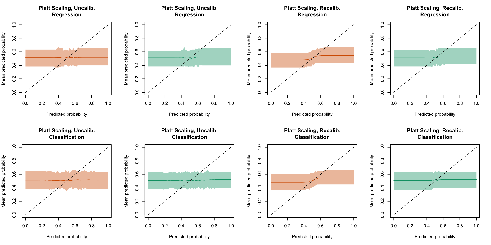
Display the R codes used to create the Figure.
plot_ma_both(method ="isotonic")
Figure 5.45: Calibration curve for the 200 replications of the estimation of the Random Forest (regression on top, classification at the bottom), obtained with moving averages, using uncalibrated scores (left) or recalibrated scores using Isotonic regression (right), on the calibration set and on the test set.
Display the R codes used to create the Figure.
plot_ma_both(method ="beta")
Figure 5.46: Calibration curve for the 200 replications of the estimation of the Random Forest (regression on top, classification at the bottom), obtained with moving averages, using uncalibrated scores (left) or recalibrated scores using Beta regression (right), on the calibration set and on the test set.
Display the R codes used to create the Figure.
plot_ma_both(method ="locfit_0")
Figure 5.47: Calibration curve for the 200 replications of the estimation of the Random Forest (regression on top, classification at the bottom), obtained with moving averages, using uncalibrated scores (left) or recalibrated scores using Local Regression (with deg=0) (right), on the calibration set and on the test set.
Display the R codes used to create the Figure.
plot_ma_both(method ="locfit_1")
Figure 5.48: Calibration curve for the 200 replications of the estimation of the Random Forest (regression on top, classification at the bottom), obtained with moving averages, using uncalibrated scores (left) or recalibrated scores using Local Regression (with deg=1) (right), on the calibration set and on the test set.
Display the R codes used to create the Figure.
plot_ma_both(method ="locfit_2")
Figure 5.49: Calibration curve for the 200 replications of the estimation of the Random Forest (regression on top, classification at the bottom), obtained with moving averages, using uncalibrated scores (left) or recalibrated scores using Local Regression (with deg=2) (right), on the calibration set and on the test set.